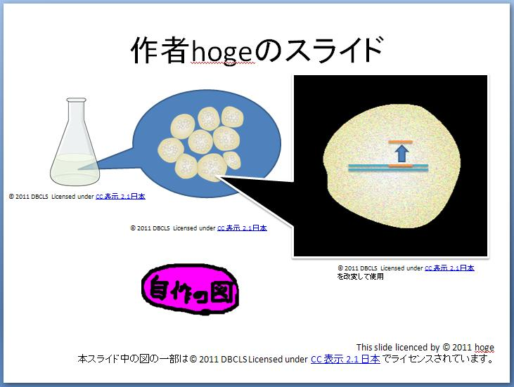

|
学会発表資料や、講義資料などで使用する第三者が作成された図を使用する際の適切な方法についてお詳しい方がおられましたらご教授いただけますと幸いです。 例としてCC-BYでライセンスされたTogo Picture Galleryの図を以下のように使用した場合適切でしょうか。  また、CC-BYでライセンスされている場合、クレジット表記すれば改変も許されると理解していますが、 上図の黒吹き出しで囲まれたような改変した図を引用する場合は、改変した旨が明記される必要がありますでしょうか。 さらに、上図ではそれほど違和感は無いかもしれませんが、図の配置等によっては、 全ての図に対して個別にクレジットを表記した場合、無理が生じる場合も有り得ると思いますが、 この場合、スライド自身のライセンス表記の後などに
のような表記でまとめてクレジットを表記するなどは許されるものでしょうか。 またCC-BYとは離れますが、CC-BYの規定などが明記されていない、WEB上で公開された図を、探してきてスライドに貼りつけ、 WEBページの(C)を表記したり、引用元のWEBページのURIを記載するような手順は 学術利用であれば、日本法における著作物の引用に該当すると考えても良いものでしょうか。 参考までに論文中の図を使用する場合は、こちらの質問を参考に、図表の使用許諾をとる方が好ましいとの回答をいただいています。手順については、拙文ですがこちらのページにも例を記載しています。 |
|
はじめに、この場合は、「引用」ではなくて利用になります。これを「引用」と表現すると混乱のもとになります。 クレジットの表示は、たとえば映画などの映像作品の場合はエンドロールにまとめて表示されます。CC-BY でも、このように、利用されるメディアなどの習慣にそって表示すればよいとされています。 クリエイティブ・コモンズ リーガル・コード アトリビューション 2.1 第5条 制限 の h
書籍の場合は、著作権のある図を利用するときは、表示を図の近くにすることがよくあると思います。では、スライドの場合は、どうなるかというのが今回の質問の論点だとすると、（１）書籍のように図の近く、（２）映像のようにエンドロール、の二つのケースを考えることになると思います。 ご指摘の通り、表現の都合で最後にまとめてることでも良いと思います。 |